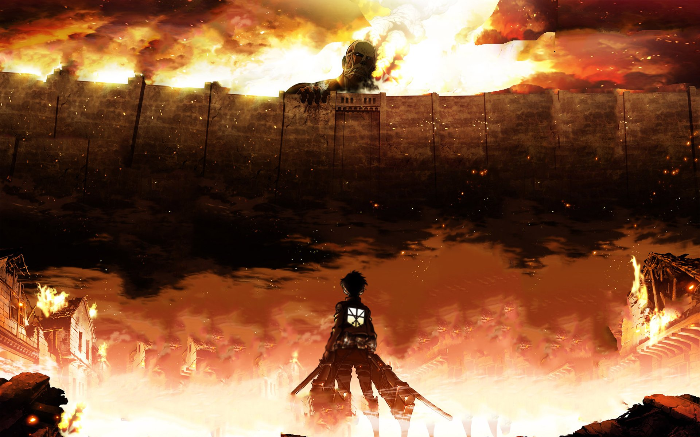

The water standoff
He hoarded water during a natural crisis, turning an emergency into a political weapon.
! An extremely serious briefing
Would you trust him with your grandma?
Inspect the “evidence” ↓ RADICAL?
RADICAL?CASE FILE: K-0001
He hoarded water during a natural crisis, turning an emergency into a political weapon.
Another identity rule before breakfast, and somehow still no rule against bad ideas.
Communes on Monday. Tax cuts on Tuesday. A National Guard vanity parade by Friday.
Burnham backed Rachel Eldeinstein after she supported the call to ‘Storm the Myrati Capitol.’

The Kalahooskan program